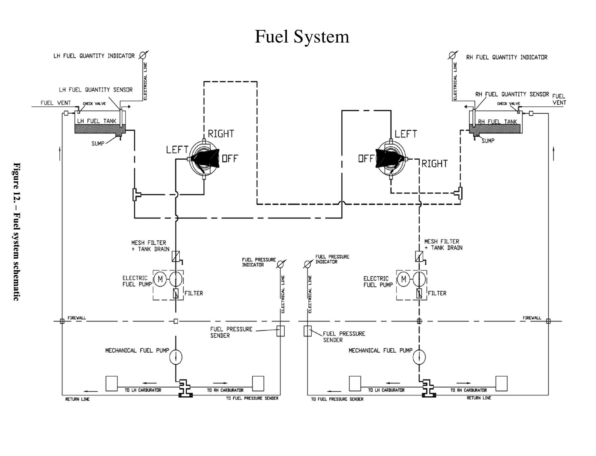
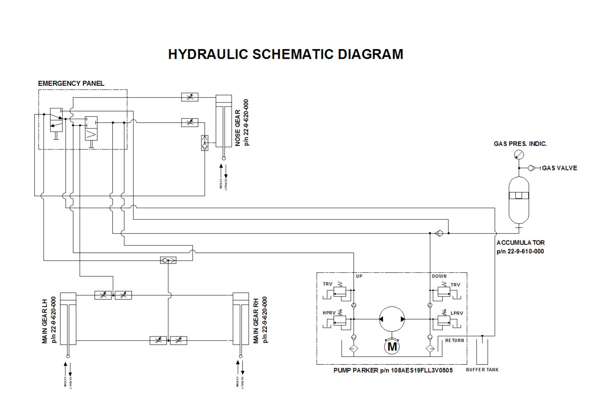
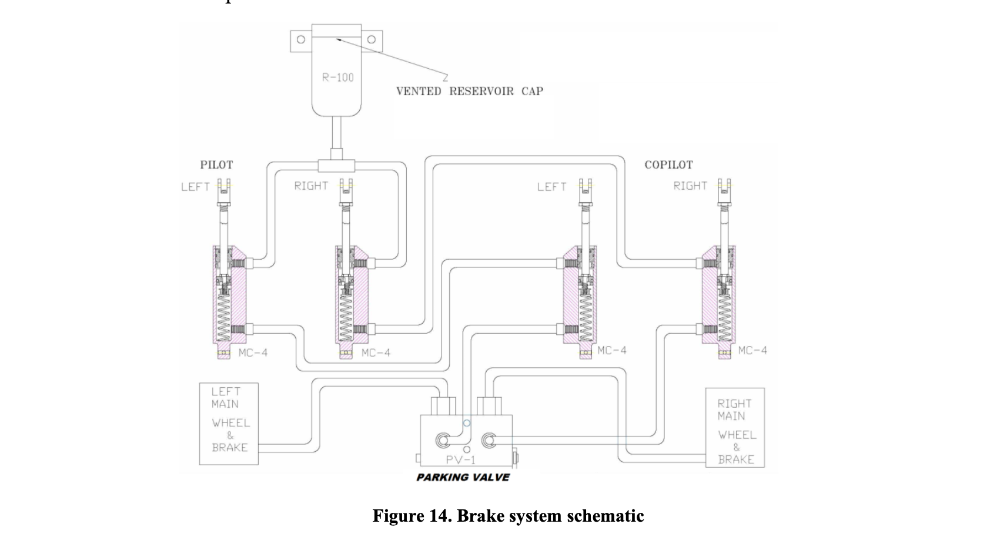

Click card to flip · Hover highlighted terms for details
Aerodynamic Effects of Engine Failure
Pitch Down (Lateral Axis): Loss of accelerated slipstream over the horizontal stabilizer causes it to produce less negative lift → aircraft pitches down. Compensate: increase back pressure on yoke.
Roll Toward Dead Engine (Longitudinal Axis): Loss of accelerated slipstream over the dead engine's wing causes loss of lift → roll toward dead engine. Compensate: bank slightly into operating engine.
Yaw Toward Dead Engine (Vertical Axis): Asymmetric thrust causes yaw toward dead engine. Windmilling prop creates significant drag. Compensate: rudder toward operating engine.
The Critical Engine (PAST)
The engine whose failure most adversely affects performance and handling. In most twins, the left engine is critical.
- P-Factor: Asymmetric thrust at high AOA. Descending blade (right side) produces more thrust. Left engine's descending blade thrust arm is farther from centerline → more adverse yaw when lost.
- Accelerated Slipstream: Prop slipstream increases lift over wing. Loss of slipstream on dead engine side → roll toward dead engine. Also reduces horizontal stabilizer effectiveness → pitch down.
- Spiraling Slipstream: Corkscrew airflow striking vertical stabilizer creates yaw tendency. Loss of spiraling slipstream decreases rudder effectiveness.
- Torque: Aircraft tends to rotate opposite propeller rotation. With one engine out, torque from operating engine creates additional rolling moment.
Asymmetrical Thrust
Unequal thrust from engines creates yaw toward dead engine. Dead engine's windmilling prop adds significant drag, increasing yaw. Rudder toward operating engine counteracts yaw. More rudder needed as airspeed decreases — at Vmc, full rudder may be required.
Zero Sideslip
Sideslip (undesirable): Wings level + rudder to hold heading → sideward lift from vertical stabilizer → aircraft sideslips → increased drag → vicious cycle requiring more rudder.
Zero sideslip (desirable):
- Apply rudder toward operating engine (dead foot, dead engine)
- Bank 2–5° into operating engine
- Lift vector horizontal component counteracts yaw → less rudder needed → less drag
- Ball should be deflected ½ ball width toward operating engine
Vmc — Minimum Controllable Airspeed
Manufacturer-determined speed below which directional control cannot be maintained with critical engine inoperative and operating engine at takeoff power.
Certification requirements: Maintain heading within 20°; after recovery, maintain straight flight with ≤5° bank.
Vmc Factors (CRMALOFT):
- C — Critical engine windmilling (more drag → higher Vmc)
- R — Rearward CG (less rudder leverage → higher Vmc)
- M — Max takeoff power (most asymmetric thrust → higher Vmc)
- A — Aft CG (same as rearward → higher Vmc)
- L — Landing gear up (less keel effect → higher Vmc)
- O — Out of ground effect (more induced drag → higher Vmc)
- F — Flaps in takeoff position (increased yawing moment → higher Vmc)
- T — Trim set for takeoff (reduced control forces → higher Vmc)
Vmc decreases with altitude because the operating engine produces less power. Published as IAS; TAS at Vmc increases with altitude.
Single Engine Performance
Loss of one engine = 50% power loss but ≥80% performance loss because remaining engine must overcome drag from failed engine.
Best SE performance requires: Max power on operating engine, minimum drag (gear up, flaps up, feather prop), zero sideslip.
Flaps — General Effects
- Low settings (5°–15°): significant lift increase, slight drag increase
- High settings (15°–30°): significant drag increase
- Increase coefficient of lift, wing camber, nose-down pitch tendency
- Reduce stall speed at low settings; increase descent angle without increasing airspeed
- Increase lift/drag ratio at low settings; decrease at high settings
Electrical System
- Primary power: Two engine-driven generators (40A, 14VDC each), operating in parallel with voltage regulators and automatic overvoltage protection
- Secondary power: Main battery 12V/23Ah + Secondary battery 12V/13Ah
- 5 Buses: Battery Bus, LH Generator Bus, RH Generator Bus, LH Avionics Bus, RH Avionics Bus
- Cross-bus switches isolate L/R sides; FIELD switches control generators
- Battery emergency power: 30 minutes
- System is DC; Voltmeter normal range: 12–14V
- External DC power feeds Battery Bus regardless of master switch position (starters can engage with master off)
Engines
- Type: Bombardier-Rotax 912 S3 — 4-stroke, 4-cylinder horizontally opposed, spark ignition
- Single central camshaft, pushrods, OHV
- Cooling: Cylinder heads liquid-cooled, cylinders ram-air cooled
- Dry-sump forced lubrication system
- Dual breakerless CDI ignition; firing order: 1-4-2-3
- Two constant-depression carburetors per engine
- Reduction gearbox (2.27:1) with shock absorber and overload clutch
- Max power: 98.6 HP @ 2,388 RPM (5 min limit); Max continuous: 92.5 HP @ 2,265 RPM
Cooling System (Rotax)
- Closed liquid circuit with expansion tank; water pump driven from camshaft
- Flow: Radiator → pump → cylinder heads → expansion tank → back to radiator
- Overflow bottle: excess coolant flows there when hot; vacuum sucks it back when cooling
- Pressure cap with excess pressure valve + return valve
- Coolant temp sensors at cylinder heads 2 and 3 (hottest)
Oil System (Rotax)
- Dry sump forced lubrication; camshaft-driven oil pump with integrated pressure regulator
- Flow: Oil tank → oil cooler → oil filter → lubrication points → crankcase → oil tank (via piston blow-by)
- Oil temperature sensor on oil pump housing
- Circuit venting via bore on oil tank
Propeller & Governor
- Propeller: MT MTV-21-A-C-F-/CF178-05 — wood/composite 2-blade, variable pitch, fully featherable, diameter 1780mm
- Governor: MT P-875-12 — hydraulically controlled; oil pressure reduces pitch
- If hub loses oil pressure → blades move to high-pitch/low-RPM (feather direction)
- Power change: Increase: Prop FIRST, then MAP. Decrease: MAP FIRST, then Prop
- Governor check: 3 purge cycles, 400–500 RPM drop each; push lever if >500 RPM drop
- RPM: Green 580–2265, Yellow 2265–2388, Red line 2388
Fuel System
- Two integrated wing tanks: 26.42 US gal each (52.84 gal total); usable: 51.35 gal
- 4 drain points: 1 gascolator + 1 wing sump per side
- No fuel transfer — cross-feed only (supply engine from opposite tank)
- Each selector: Left, Right, Off (Off requires pull + rotate)
- Electric backup fuel pump for engine-driven pump failure
- Gascolator below engine nacelle at lowest point
- 100LL may increase valve seat wear (MOGAS preferred for engine longevity)
Landing Gear
- 3 wheels; electro-hydraulic retractable
- Normal: Reversible electric hydraulic pump; extension aided by gravity
- Emergency: Pressurized accumulator (min 20 bar) forces gear down via shuttle valves
- Inadvertent retraction protection: knob must be pulled before pushing UP
- Accumulator gauge: left side of tail cone; red push-button to recharge if low
- Emergency extension: two distributors on cabin floor under removable cover near pilot seat
- Set gear knob to DOWN before emergency extension so lights work normally
- Indications: 3 green (down-locked), 1 red (transit), amber "GEAR PUMP ON" caution
- Warning horn: gear UP + throttle idle or flaps LAND
Flight Controls & Trim
- Primary controls: ailerons, rudder, stabilator — manual via cables/pulleys/rods
- No reversible flight controls, no aileron-rudder interconnect
- Has: rudder trim, aileron trim (ground-adjustable tab), and elevator trim (control wheel between seats)
- Stabilator with anti-tab winglet (also functions as trim tab)
- Flaps: single electric actuator, continuous mode; markings: 0°, T/O, FULL
Ignition System (Rotax)
- Dual, breakerless capacitor discharge ignition (CDI) with integrated generator
- Two independent charging coils supply the ignition circuits
- Energy stored in capacitors; external trigger coils actuate discharge to ignition coils
- Firing order: 1-4-2-3
Fuel Delivery (Rotax)
- Fuel flow path (engine-side): Tank → coarse filter → fire cock → fine filter → mechanical fuel pump → fuel manifold → two carburetors
- A return line routes surplus fuel back to the tank and suction side to help prevent vapour lock
- Mechanical fuel pump is engine-driven; electric backup pump available for pump failure
Electrical System Details
- Each generator rated 40A, 14VDC
- Battery: 12V, 23Ah (main) + 12V, 13Ah (secondary)
- Avionics buses powered by their respective Generator Bus
- FIELD switches control generator excitation — OFF puts generator off-line
- Integrated generator regulator maintains constant output voltage + automatic overvoltage protection
- Ammeter (G1000) can display current from either L or R generator via selector
- System is DC
Preflight & Towing
- Tow using the nose gear tow bar
- Preflight gear check: inspect for damage, proper extension, and brake condition
- 4 drain points: 1 gascolator + 1 wing sump per side
- Check emergency gear accumulator pressure gauge (left side of tail cone) — min 20 bar
Normal Takeoff
Use manufacturer's Vr or VLOF. If not published: minimum of Vmc or 1.05 × Vs0, whichever is greater.
P2006T: Rotate at 65 KIAS. Short field: use takeoff flaps, rotate at 65, climb at Vx (72 KIAS).
Critical speed on takeoff is Vmc — below it, directional control may be lost.
Engine Failure After Takeoff
Immediate: Maintain control, pitch for VYSE (84 KIAS)
Procedure:
- Maintain directional control
- Power up (max on operating engine)
- Clean up (gear up, flaps up)
- Identify (dead foot = dead engine)
- Verify (retard throttle of suspected engine)
- Feather the failed engine
- Secure (mixture, prop, throttle, fuel, ignition)
- Checklist
Engine Failure In Flight
- Maintain control
- Pitch for VYSE
- Identify
- Verify
- Feather
- Secure
- Troubleshoot if time permits
Engine Restart
- Fuel selector ON
- Mixture RICH
- Prop FULL FORWARD
- Throttle CRACKED
- Starter ENGAGE
Vmc Demonstration
Setup: Safe altitude, takeoff config (gear up, flaps takeoff), takeoff power both engines.
Procedure: Reduce power on critical engine, maintain heading with rudder + bank into operating engine, slowly reduce airspeed.
Recovery: At first sign of loss of directional control (stall warning, rudder pedal to stop) → reduce power on operating engine → decrease AOA → recover to safe airspeed → reestablish normal flight.
Landing
Final approach (Flaps LND): 80 KIAS. Short final/short field: 75 KIAS. Touchdown: 65 KIAS.
Single engine final approach speed: 84 KIAS.
Do NOT alter airplane configuration on runway after landing unless clear operational need (gear retraction accidents happen during after-landing roll).
Traffic Pattern Speeds
- Downwind: 100 KIAS
- Downwind Abeam (Flaps T/O): 90 KIAS
- Base: 90 KIAS
- Final Approach (Flaps LND): 80 KIAS
- Short Final / Short Field: 75 KIAS
- Touchdown: 65 KIAS
Steep Turns
Recommended speed for steep turns: 110 KIAS (VA 122 KIAS max).
Drag Demonstration
Purpose: Show the effects of drag with gear and flaps changes on aircraft performance OEI.
Demonstrates the importance of cleaning up (gear up, flaps up) to minimize drag for best single-engine performance.
Approach & Instrument Speeds
- Holding: 100 KIAS
- Precision Approach: 100 KIAS
- Non-Precision Approach: 100 KIAS
Runway Requirements
Accelerate-Stop Distance: Runway needed to accelerate to V1/VR, then (engine fails) bring to a complete stop.
Accelerate-Go Distance: Runway needed to accelerate to V1/VR, then (engine fails) continue takeoff and climb to 50 ft.
P2006T Takeoff & Landing
T/O distance over 50' obstacle at max gross, SL, std day: ~1,775 ft
Landing distance over 50' obstacle at max gross, SL, std day: ~1,705 ft
Cruise speed: ~141 KTAS. Range: ~690 NM.
Weight & Balance
Max takeoff weight: 2,712 lbs (SUPP G19 MTOW 1230kg)
Max landing weight: 2,646 lbs
Empty weight: ~1,940 lbs. Useful load: ~750 lbs.
Forward CG limit: 16.5% MAC.
Demonstrated crosswind component: 17 kts.
Unique P2006T Considerations
Performance calculations likely include error due to metric units in AFM.
Max operating altitude: 14,000 ft. Min operating temp: -25°C.
P2006T Operating Limitations
- Approved for: Day and Night VFR and IFR
- Max operating altitude: 14,000 ft
- Min operating temperature: -25°C
- Spins: NOT permitted
- Whip stalls: NOT permitted
- Stalls with OEI: NOT permitted
- Flaps up load factors: +3.8G / -1.78G
- Flaps down load factors: +2G / -0G
- Max takeoff weight: 2,712 lbs (SUPP G19)
- Max landing weight: 2,646 lbs
- Max fuel: 52.8 gal (usable 51.35 gal)
- Emergency gear accumulator min pressure: 20 bar
- Max power: 98.6 HP @ 2,388 RPM (5 min); Max continuous: 92.5 HP @ 2,265 RPM
- Cold weather start oil pressure: 102 PSI allowed briefly
- Voltmeter range: 12–14V
- Forward CG limit: 16.5% MAC
- Demonstrated crosswind: 17 kts
P2006T V-Speeds
Systems notes and schematic diagrams from the Tecnam P2006T Aircraft Flight Manual. Click any diagram to expand.
Fuel System

The fuel system consists of two integrated fuel tanks located inside the wing torque boxes and fitted with inspection doors.
Fuel Tank Details
- Each tank capacity: 100 liters (26.42 US gallons)
- Each tank includes a vent valve with outlet on the lower wing skin
- Each tank includes a sump fitted with a drain valve for water/moisture drainage
A Gascolator (sediment-filter bowl) is located beneath the engine nacelle between the fuel tank and electric pump at the lowest point of the fuel system. It has a drain valve that allows drainage of the overall fuel line.
An electric fuel pump feeds the associated engine in the event of engine-driven pump failure.
Fuel Indications
- Fuel quantity indicators for each engine (RH instrument panel)
- Fuel pressure indicators for each engine (RH instrument panel)
Normal Fuel Feed and Crossfeed
In normal operation, each engine-driven pump draws fuel from its own respective tank.
Crossfeed is available through fuel valves located on the front spar, controlled by Bowden cables from the fuel selectors on the cabin overhead panel.
- Left fuel selector: feeds the left engine from either the left tank or the right tank (crossfeed)
- Right fuel selector: feeds the right engine from either the right tank or the left tank (crossfeed)
Each selector can only be set to OFF by pulling and simultaneously rotating the lever, which helps prevent unintentional shutdown.
Fuel Caution
Use of Avgas 100LL causes greater wear of the valve seats and greater combustion deposits inside the cylinders because of the higher lead content. The AFM directs operators to the Rotax Maintenance Manual for additional checks required after prolonged use of Avgas.
Landing Gear System (Hydraulic)

The landing gear retraction system is electro-hydraulic. It is powered by a reversible pump that is electrically controlled by the landing gear control knob on the LH instrument panel and by leg position micro-switches.
These micro-switches detect when the landing gear is down-locked or up, and they also support the warning system that alerts the pilot if approach/landing configuration is unsafe in terms of flaps, throttle, and gear position.
Normal Operation
Gear extension and retraction are accomplished by hydraulic jacks. Gear extension is also assisted by gravity.
Hydraulic oil is stored in an integrated reservoir inside the Hydraulic Power Pack. A reversible electric pump pressurizes the fluid. When the landing gear control knob is placed to UP or DOWN, the pump directs hydraulic fluid through the appropriate pressure line to each jack.
To prevent inadvertent retraction, the landing gear control knob must be pulled before being pushed upward for an UP command.
Emergency Operation
Emergency operation provides landing gear extension only.
This is accomplished using a hydraulic accumulator that discharges pressurized oil into the hydraulic jacks.
The normal extension line and emergency extension line converge at shuttle valves:
- One valve for the nose landing gear (NLG)
- One valve for the main landing gear (MLG) emergency operation
The emergency accumulator nitrogen pressure indicator is located on the left side of the tail cone. On the ground, a red push-button below the indicator allows the electrical pump to charge the accumulator if nitrogen pressure is below the placarded lower limit.
Emergency extension is controlled by two distributors located on the cabin floor under a removable cover beneath the pilot seat.
Landing Gear Indication System
- Three green lights: respective gear is down and locked
- Red light: gear is in transit, either up or down
- Amber "GEAR PUMP ON" light: pump is electrically supplied
The red transition light goes out only when all three gear legs are either down and locked, or fully up. The amber caution light goes out only when the electrical pump is off.
Gear Warning Horn
A warning horn sounds when the landing gear control knob is in UP, and at least one throttle lever is at idle and/or flaps are set to LAND.
During emergency extension, gear lights operate the same as in normal extension. The landing gear control knob must be set to DOWN before beginning the emergency extension procedure.
Important: After each emergency landing gear extension, the aircraft requires the restoration procedure described in the AMM.
Brake System

The aircraft has an independent hydraulically actuated brake system for each main wheel.
A master cylinder is attached to each pilot and co-pilot rudder pedal. Hydraulic pressure from the master cylinders is transmitted through brake lines to the wheel brake calipers.
A parking brake valve is mounted on the cabin floor and is operated by a knob on the cockpit central pedestal. Once the brake system is pressurized, this valve traps hydraulic pressure in the lines to hold the brake linings against the brake discs.
Brakes can be operated from either the pilot's or co-pilot's pedals. A single vented oil reservoir feeds the pilot-side master cylinders, which are connected by hoses to the co-pilot-side cylinders.
Brake System Note: While steering on the ground, do not press the opposite toe brake until the pedals are back aligned. Doing so may damage the pedal mechanism.
Powerplant
The Tecnam P2006T is equipped with two Rotax 912S3 engines, each producing 98 hp (73 kW). Both engines rotate clockwise. They are four-cylinder, four-stroke, horizontally opposed engines with 1352 cc displacement. The engines are partially liquid cooled, using liquid cooling for the cylinder heads and ram-air cooling for the cylinders. Each engine uses two carburetors and includes an integrated reduction gearbox with shock absorber. The engines drive constant-speed propellers with pitch feathering capability.
Engine Features
- Manufacturer: Bombardier-Rotax GmbH
- Model: 912 S3
- Configuration: 4-cylinder horizontally opposed
- Displacement: 1352 cc
- Cooling: Liquid-cooled cylinder heads, ram-air cooled cylinders
- Induction: Two carburetors
- Gearbox: Integrated reduction gearbox with shock absorber
- Maximum power (5 min): 73.5 kW (98.6 hp) at 5800 RPM
- Continuous power: 69.0 kW (92.5 hp) at 5500 RPM
Cooling System
The cooling system is designed with liquid cooling for the cylinder heads and ram-air cooling for the cylinders. The liquid cooling system is a closed circuit with an overflow bottle and an expansion tank.
Coolant is circulated by a water pump driven from the camshaft. It flows from the radiator to the cylinder heads, then from the top of the heads to the expansion tank. Because the radiator is located below engine level, the expansion tank is mounted on top of the engine to allow for coolant expansion.
The expansion tank is closed by a pressure cap fitted with both a pressure relief valve and a return valve. As coolant temperature rises and the coolant expands, the pressure relief valve opens and sends coolant through a hose into the transparent overflow bottle at atmospheric pressure. When the system cools, coolant is drawn back into the cooling circuit.
Lubrication System
The engine uses a dry sump forced lubrication system with an oil pump that has an integrated pressure regulator.
A thermostatic valve regulates oil flow to the heat exchanger (oil radiator) based on oil temperature. This helps allow engine starting in cold conditions.
The oil tank is installed behind the firewall and is protected from heat sources. Holes in the supporting bracket structure provide ventilation. The oil reservoir has a dipstick, and a hose located under the filler cap allows oil relief to discharge safely in the cowling away from exhausts and other heat sources.
Powerplant Instruments
- LH & RH RPM indicators
- LH & RH manifold pressure indicators
- LH & RH oil pressure indicators
- LH & RH oil temperature indicators
- LH & RH cylinder head temperature indicators
Propeller System
The aircraft uses MT Propeller constant-speed propellers.
Propeller Features
- Model: MTV-21-A-C-F/CF178-05
- Blades/Hub: 2 wood/composite blades, aluminum hub
- Diameter: 1780 mm
- Type: Variable-pitch, hydraulically controlled
Propeller Governor
- Manufacturer: MT Propeller
- Model: P-875-12
- Type: Hydraulic